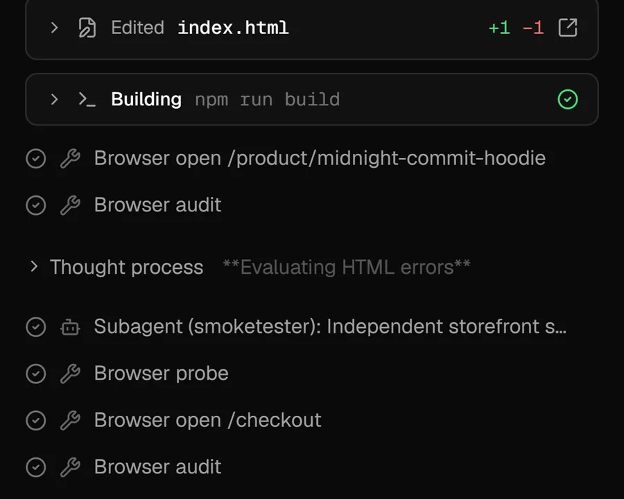

Small local models fail the same way in every harness. Cascade is built to carry what they drop.
We gave the same 9-billion-parameter model the same job in two coding-agent harnesses. It made the same mistakes in both. One harness stopped at every mistake and waited for us. The other noticed, corrected course, and finished on its own.
Cascade is an open-source AI app builder that runs on your machine: you describe an app, an agent plans it, writes the code, builds it in a sandbox and checks it in a browser. It works with frontier models through your own API key, but the reason it exists is local models — the ones you run yourself with Ollama, for free, with nothing leaving your machine.
Local models in the 7–35B range are good enough to write real code. They are not good enough to finish real work reliably, and that gap is mostly not about intelligence. This post is about where it comes from, measured.
The experiment
One model, one task, two harnesses:
- Model:
qwen3.5:9bthrough Ollama, with a 32K context window baked into the model tag. (Worth knowing: Ollama's OpenAI-compatible endpoint otherwise reloads the model at a 4,096-token default, silently.) - Task: build a small web app from a prompt — the same app-building prompts Cascade's own evaluation suite uses.
- Harnesses: Cascade, and a widely used commercial coding agent built for frontier models, pointed at the same Ollama model through a small translation proxy.
That other agent is excellent. It is also designed around frontier models, and that design choice turns out to be the whole story here.
Same model, same failures
In both harnesses the model dropped the ball in the same three ways:
- Wrong-shell commands. Windows
cmdsyntax —cd /d C:\…— sent to a bash shell, which fails. - Stale writes. Editing a file from memory after it had changed on disk, so the edit is rejected.
- Turns that end on a thought. The model reasons about what to do next, then ends its turn without doing it.
Because the failures were identical across two very different harnesses, they are properties of the model, not of either tool. That matters: you cannot prompt them away for good, and a better model will not show up next week to fix them for you. The harness has to handle them.
Where the harnesses differed
The other agent's contract assumes the model finishes its own work, so when the 9B model ended a turn with the job half done, the turn simply ended. We typed "continue" four or five times. It still did not converge. That is not a bug in that agent; it is a reasonable design for the models it was built for.
Cascade ran the same kind of task unattended:
| Task (qwen3.5:9b, 32K context) | Result in Cascade | Time |
|---|---|---|
| Todo app | Built and verified, unattended | 212 s |
| Landing page with a hero section | Built and verified, unattended | 164 s |
| Multi-page online store | Honest timeout — zero failed shell commands, no false "done" | — |
The store result is the ceiling of a 9B model on work that spans many files, and we would rather report it than hide it. The point is the difference in kind: the first two finished with nobody at the keyboard, and the third failed honestly instead of claiming success.
How Cascade carries what the model drops
Every recovery in Cascade is a small, specific check that fires only when there is evidence the model dropped something:
- A plan it has to keep. The agent writes a task list; a turn cannot quietly end with tasks still open.
- A verify step it cannot skip. "Done" requires the project to build and the app to load, not the model's word for it.
- Thought-only turns get a nudge to act. A turn that ends on reasoning is asked to carry out what it just decided.
- Loop breakers. Re-editing the same file over and over, or repeating the same browser call, is noticed and redirected.
- Freshness checks. An edit to a file that changed since the model read it is refused with a reason, so the model re-reads instead of guessing.

The design rule that keeps this honest: every check is triggered by evidence, never by model size. A frontier model that does its own verification never trips them, so they cost it nothing. A small model that drops a ball gets caught at the exact place it dropped it.
Two more things we measured the hard way
The prompt matters more than you think
Same 9B model, same store task, four prompt revisions, one change at a time. The failure moved from pathological (a 30-minute timeout with zero builds attempted) to structural (a red build) to cosmetic (a green build that failed one brand-name check) — and the last run was the fastest, at 13.5 minutes. The model never changed. For local models, prompt architecture is a first-order variable, not polish.
Check your sampling before you blame the model
A 35B mixture-of-experts model failed every scenario in one batch while the 9B passed the same tests. Its signature was strange: it announced its next step ("Now wire the button:") and ended the turn. The cause was not capability. The test ran at temperature 0 while the model's Modelfile pinned a presence penalty of 1.5 — greedy decoding plus a strong penalty on repeated tokens steers a model away from writing code, which is mostly repeated tokens. With temperature 0.6 and a presence penalty of 0.5, the same family worked. Run ollama show <model> --modelfile and work out the effective settings before you conclude anything.
If you want to run a coding agent locally
- Give it at least 32K of context, and 64K if you can. Bake
num_ctxinto the model tag so a client cannot silently reset it. - Use a model with tool calling. Don't run mixture-of-experts models greedily; use the sampling their model card recommends.
- Treat 9B as the floor for building whole apps, and expect a small multi-page app to be its ceiling today.
- Pick a harness that checks the work rather than trusting the model's "done".
Try it on your own models
Cascade is free and MIT licensed. Download the desktop app for Windows, macOS or Linux, point it at Ollama or your own key, and describe an app.
Also on the blog: One prompt, one turn, a working store: inside a real Cascade build.